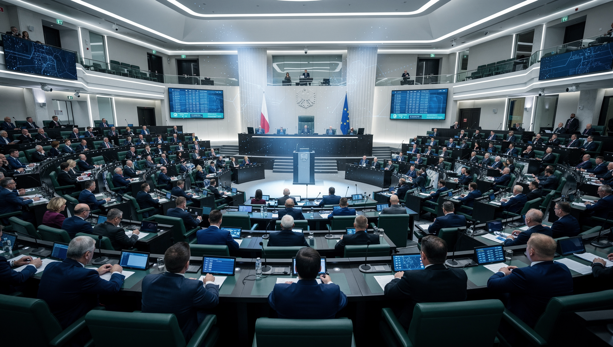
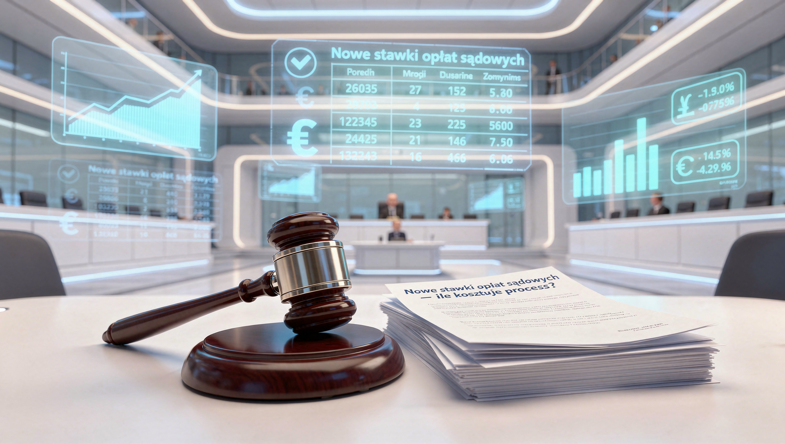
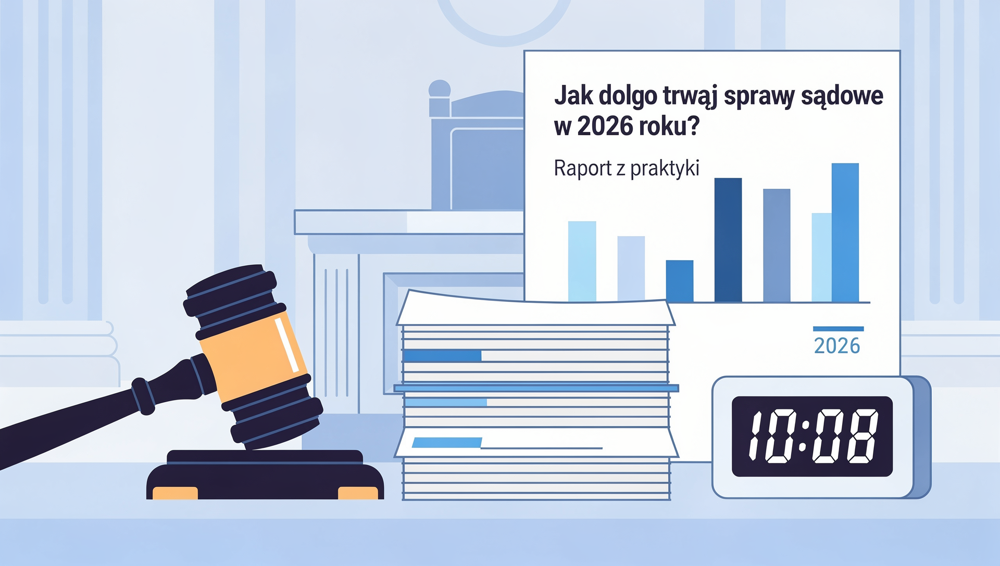
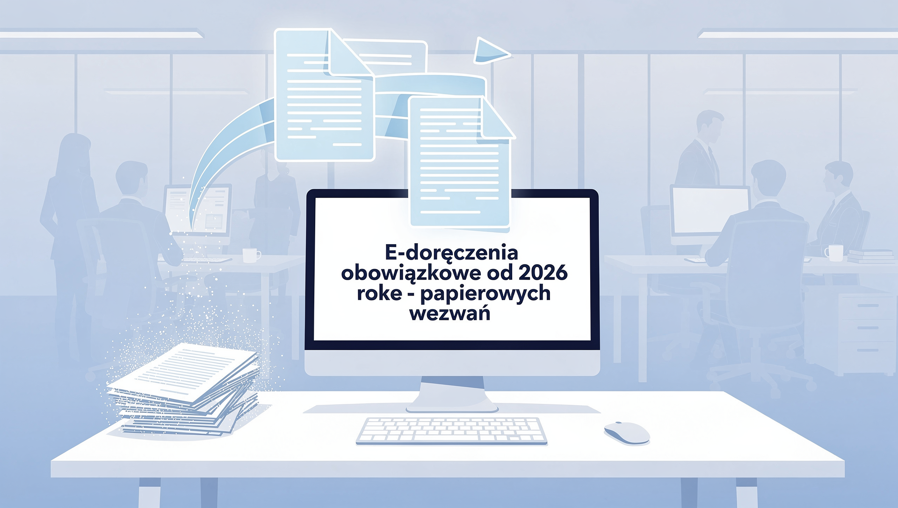

Polski system prawny przechodzi dynamiczne zmiany. W tym blogu znajdziesz obiektywne analizy najważniejszych reform, orzecznictwa i wydarzeń, które kształtują polską sprawiedliwość. Bez politycznych ocen – tylko fakty i ich konsekwencje dla obywateli i przedsiębiorców.
📅 19 maja 2026🏛️ System sądownictwa⏱️ 7 min czytania
Sejm wybrał nową KRS wbrew Trybunałowi Konstytucyjnemu — i co z tego wynikło?
15 maja 2026 r. Sejm wybrał 15 nowych sędziów-członków Krajowej Rady Sądownictwa — mimo że trzy dni wcześniej Trybunał Konstytucyjny wydał postanowienie zakazujące przeprowadzenia tego głosowania. PiS zbojkotował obrady. Trzy dni później dotychczasowa przewodnicząca KRS Dagmara Pawełczyk-Woicka ogłosiła rezygnację, próbując zablokować zwołanie nowej Rady. Czy jej zagranie miało szanse powodzenia?

TK mówi „stop" — Sejm głosuje mimo to
W poniedziałek 12 maja 2026 r. Trybunał Konstytucyjny (w składzie: Piotrowicz, Piskorski, Sochański, Święczkowski, Wojciechowski) wydał postanowienie zabezpieczające wzywające Sejm do wstrzymania się z wyborem sędziów do KRS do czasu rozpatrzenia wniosku złożonego przez posłów PiS. W piątek 15 maja Sejm przeprowadził głosowanie mimo tego postanowienia.
Dlaczego Sejm zignorował TK?
Koalicja rządząca stoi na stanowisku, że obecny TK — obsadzony sędziami wybranymi z naruszeniem prawa przez Sejm poprzedniej kadencji, w tym Piotrowiczem i Święczkowskim — nie ma legitymacji do wydawania takich postanowień. Co więcej, TK nie ma procedury zabezpieczającej wobec czynności Sejmu jako organu konstytucyjnego — przepis zastosowany przez TK to art. 755 KPC, który dotyczy postępowań cywilnych, a nie działalności parlamentu. Prawnicy koalicji uznali postanowienie za prawnie niewiążące.
Kluczowy detal: TK zablokował inny przepis niż ten, którym głosował Sejm
Tu pojawia się prawnicza pułapka, z której koalicja skwapliwie skorzystała. Postanowienie TK wzywało Sejm do wstrzymania głosowania prowadzonego na podstawie art. 11d ust. 6 ustawy o KRS — czyli przepisu o głosowaniu ponownym, gdzie wystarczy zwykła większość. Tymczasem Sejm przeprowadził wybór na podstawie art. 11d ust. 5 — czyli pierwszego głosowania, wymagającego większości 3/5 głosów oddanych. Wicemarszałek Włodzimierz Czarzasty skomentował to dosadnie: „TK zabezpieczył nie ten przepis."
Paradoksalnie bojkot PiS pomógł koalicji: z 460 posłów na sali stawiło się tylko 258. Spośród nich 235 głosowało „za" — co stanowi ponad 90% głosujących i z łatwością przekracza próg 3/5. Gdyby PiS uczestniczył w głosowaniu, próg byłby trudniejszy do osiągnięcia przy zakładanym rozkładzie sił.
Wynik głosowania — nowa KRS wybrana
Liczby:
235 posłów zagłosowało za listą 15 sędziów
18 posłów głosowało przeciw
5 wstrzymało się
187 posłów PiS nie wzięło udziału w głosowaniu (bojkot)
Na liście: 13 kandydatów koalicji wyłonionych przez zgromadzenia sędziów + Łukasz Piebiak (kandydat PiS) + Łukasz Zawadzki (Konfederacja).
Ruch Pawełczyk-Woickiej — rezygnacja jako broń
W poniedziałek 18 maja dotychczasowa przewodnicząca neo-KRS Dagmara Pawełczyk-Woicka ogłosiła, że rezygnuje ze stanowiska ze skutkiem od 15 maja — czyli od dnia, gdy Sejm wybrał nową Radę. Cel był polityczny: gdyby jej rezygnacja była ważna, to na stanowisku przewodniczącej KRS pozostałby ktoś inny ze starego składu (np. reprezentant Prezydenta Grzegorz Ksepko), kto mógłby blokować zwołanie pierwszego posiedzenia nowej Rady.
Czy to zagranie miało sens prawny?
Nie. Prawnicy są zgodni: z chwilą wyboru nowej KRS przez Sejm kadencja poprzednich członków wygasła z mocy prawa. Pawełczyk-Woicka nie miała już stanowiska, z którego mogłaby rezygnować. Jej oświadczenie to jedynie gest polityczny.
Kto zwoła pierwsze posiedzenie nowej KRS?
Ustawa nakłada ten obowiązek na I Prezes Sądu Najwyższego — z terminem 30 dni. Tu pojawia się kolejny węzeł gordyjski: kadencja Małgorzaty Manowskiej (I Prezes SN) wygasła 26 maja 2026 r. Decyzja o zwołaniu KRS spoczęła w rękach jej następcy — o czym piszę w kolejnym artykule.
Co to wszystko oznacza dla obywateli?
Praktyczne konsekwencje chaosu wokół KRS:
Nominacje sędziowskie wstrzymane — dopóki nowa KRS się nie ukonstytuuje, nie rekomenduje nowych sędziów → wakaty rosną → terminy się wydłużają
Niepewność statusu orzeczeń — wyroki wydane przez sędziów powołanych przez neo-KRS mogą być w przyszłości kwestionowane
Firmy prowadzące spory sądowe — przy sprawach długoterminowych warto rozważyć ryzyko przewlekłości i ewentualnej skargi na naruszenie prawa do sądu w rozsądnym terminie
Twoja sprawa utknie przez chaos w sądownictwie?
Pomogę ocenić ryzyka i alternatywy — mediacja lub ugoda mogą być szybszym wyjściem niż czekanie na sąd.
Zbigniew Kapiński nowym I Prezesem Sądu Najwyższego — kontrowersje wokół wyroku o lustracji Wałęsy
26 maja 2026 r. wygasła kadencja Małgorzaty Manowskiej jako I Prezes Sądu Najwyższego. Prezydent Nawrocki wybrał jej następcą sędziego Zbigniewa Kapińskiego — Prezesa Izby Karnej SN. Wybór natychmiast wywołał burzę: PiS i Jarosław Kaczyński zaatakowali Kapińskiego za wyrok z 2000 roku ws. lustracji Lecha Wałęsy.

Kłopotliwy wybór kworum — Zgromadzenie SN trzeba było zwoływać trzy razy
Procedura wyboru I Prezesa SN wymaga, by kandydatów wskazało Zgromadzenie Sędziów SN. Problem: brak kworum. Pierwsze i drugie zgromadzenie nie zebrało wymaganej liczby uczestników. Dopiero za trzecim razem udało się przeprowadzić głosowanie i wyłonić 5 kandydatów, spośród których Prezydent wybiera jednego.
Nawrocki zdecydował się na Zbigniewa Kapińskiego: sędzia od 1990 r., w Sądzie Najwyższym od 2022 r., Prezes Izby Karnej od maja 2023 r. Wybór był kontrowersyjny — 29 sędziów SN publikuje list protestacyjny kwestionując legalność całej procedury.
Kontrowersja: wyrok o lustracji Wałęsy z 2000 roku
W sierpniu 2000 roku Wydział Lustracyjny Sądu Apelacyjnego w Warszawie — w składzie z sędzią Kapińskim — orzekł, że oświadczenie lustracyjne Lecha Wałęsy (zaprzeczające współpracy z SB) było zgodne z prawdą. Wałęsa nie był traktowany przez sąd jako tajny współpracownik.
Kaczyński atakuje, historycy bronią:
Jarosław Kaczyński napisał na X, że „nie może sobie wyobrazić" sędziego z tego wyroku jako I Prezesa SN. Historyk Piotr Gontarczyk ripostuje: Kapiński był jednym z trzech sędziów w składzie, działał zgodnie z ówczesnymi przepisami, sąd był ograniczony ramami proceduralnymi — nie można przypisywać mu indywidualnej odpowiedzialności za wynik tamtego orzeczenia. Kapiński sam tłumaczy, że „sąd był związany przepisami, które wówczas obowiązywały".
Kluczowe zadanie Kapińskiego: zwołać nową KRS
I Prezes SN ma ustawowy obowiązek zwołania pierwszego posiedzenia nowo wybranej KRS w terminie 30 dni. Manowska zdążyła lub nie zdążyła tego zrobić przed upływem kadencji 26 maja — chaos prawny wokół KRS stał się dosłownie pierwszym testem dla Kapińskiego.
Nastroje środowiska po wyborze
Reakcje różnych stron:
PiS i prawica — atak na lustracyjny wyrok, sugestia że Kapiński jest „człowiekiem III RP chroniącym Wałęsę"
Koalicja rządząca — umiarkowanie pozytywna; Kapiński nie jest ideologicznie bliski koalicji, ale jest sędzią „legalnym" (mianowanym przed reformami PiS)
Sędzia Michał Laskowski (były I Prezes SN): „Kapiński nie jest radykałem. To dobry wybór dla stabilizacji instytucji"
29 sędziów SN — list protestacyjny kwestionujący legalność wyboru
Co I Prezes SN oznacza dla stron postępowań?
I Prezes SN nie prowadzi zwykłych spraw — ale ma kluczową rolę administracyjną i symboliczną. Dla stron postępowań ważne jest to, że stabilność kierownictwa SN wpływa na sprawność rozpatrywania kasacji i skarg nadzwyczajnych. Każde „trzęsienie ziemi" na szczycie sądownictwa przekłada się na opóźnienia.
Planujesz kasację lub skargę nadzwyczajną do SN?
To skomplikowane postępowania. Skontaktuj się — ocenię szanse i przygotuje strategię.
Zgromadzenie Izby Adwokackiej w Warszawie: adwokaci zbuntowali się przeciw podwyżce składki
16 maja 2026 r. odbyło się Zwyczajne Zgromadzenie Izby Adwokackiej w Warszawie — największej w Polsce, liczącej ponad 6 000 adwokatów. Główne starcie: ORA Warszawa proponowała wzrost składki do 147 zł miesięcznie, ale ponad 1 100 adwokatów powiedziało „nie". Co jeszcze działo się na zgromadzeniu?

Jak wyglądało zgromadzenie?
Zgromadzenie odbyło się w sobotę 16 maja 2026 r. od godz. 9:00 w formule hybrydowej: część adwokatów stawiła się osobiście w Hotelu Regent przy ul. Belwederskiej 23, reszta głosowała online. Przed zgromadzeniem ORA Warszawa uruchomiła specjalny Help Desk ds. dostępu online — co samo w sobie mówi wiele o skali logistycznych wyzwań przy organizacji zdalnego głosowania dla kilku tysięcy osób.
Bitwa o składkę — ORA kontra adwokaci
Okręgowa Rada Adwokacka w Warszawie zaproponowała wzrost miesięcznej składki z 137 zł do 147 zł (+10 zł). Uzasadnienie: Naczelna Rada Adwokacka podniosła o 5 zł składkę centralną, co z automatu oznacza konieczność wyrównania w izbie.
Wynik głosowania:
1 163 adwokatów — przeciw podwyżce proponowanej przez ORA
838 adwokatów — za podwyżką do 147 zł
Zgromadzenie wyraźnie odrzuciło propozycję zarządu Izby.
W zamian przeszła alternatywna propozycja adwokata Grzegorza Kukowki: składka pozostaje na poziomie 137 zł od stycznia do czerwca 2026 r., a od lipca wzrasta do 140 zł miesięcznie. Łącznie w 2026 r.: 1 662 zł rocznie.
Kontekst:
Warszawska izba tradycyjnie ma najniższą składkę spośród wszystkich izb adwokackich w Polsce. Mimo to adwokaci zdecydowanie odrzucili propozycję Rady — co pokazuje napięcie między samorządem a jego członkami w kwestii finansowania.
Co jeszcze na zgromadzeniu?
Nie przeszła propozycja adw. Artura Jędrychy dotycząca zmiany zasad odprowadzania składki do NRA
Dziekan dr Katarzyna Gajowniczek-Pruszyńska wskazała sytuację w sądownictwie jako największe zmartwieniem izby — chaos wokół KRS i TK bezpośrednio uderza w pracę adwokatów
12 projektów uchwał — część dotyczyła kwestii budżetowych, część organizacyjnych
Ustalenia ze zgromadzenia były tematem następnego posiedzenia ORA Warszawa w dniu 27 maja 2026 r.
Moja perspektywa
Odrzucenie propozycji budżetowej przez Zgromadzenie to sygnał dla władz Izby: adwokaci oczekują przejrzystości i uzasadnienia kosztów, zanim zgodzą się na podwyżkę. Frekwencja i zaangażowanie w głosowanie — ponad 2 000 głosujących — pokazują, że adwokatura to żywy samorząd, a nie ciało dekoracyjne. Dla klientów: dobrze prosperująca, aktywna izba to gwarancja standardów wykonywania zawodu.
Pytania o koszty pomocy prawnej?
Transparentność w kwestii opłat to mój standard. Skontaktuj się — wycenię sprawę bez zobowiązań.
📅 3 lutego 2026🏛️ System sądownictwa⏱️ 8 min czytania
Reforma sądownictwa 2025/2026 – co się zmieniło i co nas czeka?
Rok 2025 przyniósł znaczące zmiany w organizacji polskich sądów. Nowe przepisy mają na celu skrócenie czasu oczekiwania na rozprawy i usprawnienie procedur. Czy reforma przyniesie oczekiwane efekty? Analiza zmian i ich wpływu na postępowania sądowe.
Kluczowe zmiany wprowadzone w 2025 roku
W grudniu 2025 roku weszły w życie przepisy reformujące organizację sądów powszechnych i administracyjnych. Główne założenia to:
Digitalizacja akt sądowych – wszystkie nowe sprawy od 1 stycznia 2026 prowadzone są wyłącznie elektronicznie
Reorganizacja wydziałów – połączenie niektórych wydziałów cywilnych i gospodarczych w sądach rejonowych
Nowe terminy – skrócenie maksymalnego terminu wyznaczenia pierwszej rozprawy z 6 do 3 miesięcy
Reforma Krajowej Rady Sądownictwa – zmiany w procedurze wyboru członków KRS
Usprawnienie postępowań egzekucyjnych – nowe narzędzia dla komorników
Kontrowersje i obawy środowiska prawniczego
Reforma spotkała się z mieszanym przyjęciem. Podczas gdy digitalizacja jest powszechnie chwalona, inne zmiany budzą wątpliwości:
Koszty cyfryzacji – nie wszystkie sądy otrzymały odpowiednie wyposażenie techniczne
KRS i niezależność sądów – trwa debata nad konstytucyjnością nowych przepisów
Chaos organizacyjny – reorganizacja wydziałów spowodowała przesunięcia spraw i opóźnienia
Pierwsze efekty – dane z pierwszych miesięcy 2026
Według danych Ministerstwa Sprawiedliwości z stycznia 2026 roku:
Średni czas wyznaczenia pierwszej rozprawy skrócił się o 23% (z 4,8 do 3,7 miesiąca)
E-akta funkcjonują w 87% sądów (cel: 100% do czerwca 2026)
Liczba zawieszeń spraw wzrosła o 12% z powodu reorganizacji
Satysfakcja obywateli z obsługi sądów wzrosła o 8 punktów procentowych
Co to oznacza dla Twojej sprawy?
⚠️ Praktyczne konsekwencje dla stron postępowań:
Jeśli Twoja sprawa jest w toku – może ulec przesunięciu z powodu reorganizacji wydziałów. Sprawdź status w portalu e-sąd.
Nowe sprawy – składaj wyłącznie elektronicznie przez system e-Protokół (koniec z papierowymi pismami!)
Sprawy pilne – możesz wnioskować o przyspieszenie na podstawie nowych przepisów (art. 6a KPC)
Terminy – ustawowy 3-miesięczny termin na pierwszą rozprawę nie zawsze jest dotrzymywany – działaj prewencyjnie
Moja opinia jako praktyka
Po ponad miesiącu funkcjonowania nowych przepisów widzę zarówno postępy, jak i problemy. Digitalizacja to krok we właściwym kierunku – e-akta rzeczywiście przyspieszają wymianę pism i ograniczają błędy. Jednak braki kadrowe pozostają kluczowym wyzwaniem. Żadna reforma organizacyjna nie zastąpi brakujących sędziów i pracowników sądów.
Reorganizacja wydziałów spowodowała tymczasowy chaos – wiele moich spraw zostało przeniesionych między wydziałami, co spowodowało opóźnienia. Dlatego jeśli planujesz pozew w najbliższych tygodniach, przygotuj się na dłuższe terminy niż obiecywane 3 miesiące.
Dzięki za artykuł! Moja sprawa rzeczywiście została przeniesiona między wydziałami. Czy mogę wnioskować o przyspieszenie?
Anna M.
4 lutego 2026
Świetne wyjaśnienie zmian. Szkoda tylko że w praktyce nie wszystko działa tak jak powinno...
Dodaj komentarz
📅 27 stycznia 2026⚖️ Prawo procesowe⏱️ 6 min czytania
E-doręczenia obowiązkowe od 2026 roku – koniec papierowych wezwań
Od 1 stycznia 2026 wszystkie zawiadomienia sądowe doręczane są elektronicznie przez system e-Doręczenia. Co to oznacza dla stron postępowań? Jak założyć skrzynkę e-Doręczeń? Wyjaśniamy krok po kroku.

Co to jest system e-Doręczeń?
System e-Doręczeń to publiczna usługa umożliwiająca elektroniczne doręczanie pism urzędowych. Od 1 stycznia 2026 roku zastępuje on tradycyjne doręczenia pocztą.
Obowiązkowy dla przedsiębiorców – wszystkie firmy muszą mieć aktywną skrzynkę
Dobrowolny dla osób prywatnych – ale coraz więcej urzędów domaga się jej założenia
Bezpieczny – wszystkie przesyłki są szyfrowane i mają status dokumentu urzędowego
Bezpłatny – założenie i utrzymanie skrzynki nie kosztuje nic
Konsekwencje braku skrzynki e-Doręczeń
🔴 Co się stanie, jeśli nie założysz skrzynki?
Firmy – mogą otrzymać karę do 500 zł za brak aktywnej skrzynki
Przedsiębiorcy – pisma z sądu uznaje się za doręczone po 14 dniach (fikcja doręczenia!)
Osoby prywatne – wciąż mogą otrzymywać pisma pocztą, ale to się zmieni w 2027 r.
Pełnomocnicy (adwokaci, radcowie) – obowiązkowo od 2024 r.
Jak założyć skrzynkę e-Doręczeń? (instrukcja krok po kroku)
✅ Procedura zakładania skrzynki:
Wejdź na stronę: www.gov.pl/web/gov/skrzynka-e-doreczenia
Zaloguj się przez Profil Zaufany lub e-dowód
Wypełnij formularz (dane osobowe/firmowe)
Potwierdź aktywację skrzynki (otrzymasz SMS z kodem)
Gotowe! Od tej chwili wszystkie pisma urzędowe będą przychodzić elektronicznie
Czas założenia: około 10 minut
Statystyki – jak Polacy radzą sobie z e-Doręczeniami?
Według danych Ministerstwa Cyfryzacji (styczeń 2026):
2,8 mln aktywnych skrzynek (78% firm, 22% osób prywatnych)
89% przedsiębiorców założyło skrzynkę (pozostałe 11% narażone na kary)
Średni czas doręczenia – 2 minuty (vs. 3-7 dni pocztą tradycyjną)
Problemy techniczne – zgłoszono 12 000 awarii systemu w pierwszych tygodniach
E-doręczenia w postępowaniach sądowych
W praktyce sądowej e-doręczenia znacząco przyspieszają postępowania. Przykłady:
Pozew doręczony w ciągu 2 minut zamiast tygodnia
Terminy liczą się od dnia doręczenia elektronicznego (nie ma "okresu przejściowego")
Brak problemów z "awizami" i niedoręczeniami
UWAGA: Musisz regularnie sprawdzać skrzynkę! Brak odczytania pisma nie wstrzymuje biegu terminów
Najczęstsze problemy i jak ich unikać
❌ Typowe błędy użytkowników:
Brak sprawdzania skrzynki → przegapienie terminów procesowych
Nieaktualne dane kontaktowe → brak powiadomień SMS/email
Założenie skrzynki "na ostatnią chwilę" → aktywacja trwa do 24h
Dziękuję za instrukcję! Założyłem skrzynkę w 10 minut. Polecam wszystkim przedsiębiorcom.
Magdalena K.
29 stycznia 2026
A co z osobami starszymi, które nie mają Profilu Zaufanego? To dyskryminacja...
Dodaj komentarz
📅 15 stycznia 2026📊 Statystyki sądowe⏱️ 7 min czytania
Jak długo trwają sprawy sądowe w 2026 roku? Raport z praktyki
"Kiedy będzie wyrok?" – pytanie, które słyszę najczęściej. Przedstawiam rzeczywiste czasy trwania postępowań w polskich sądach na podstawie moich własnych spraw z 2025 roku oraz danych Ministerstwa Sprawiedliwości.
Średnie czasy trwania spraw – dane z mojej praktyki (2025)
Prowadziłam w 2025 roku około 200 spraw sądowych. Oto rzeczywiste średnie czasy od złożenia pozwu do prawomocnego zakończenia:
Rodzaj sprawy
Średni czas (moje sprawy)
Dane MS (ogólnopolskie)
Status
Windykacja należności (nakaz zapłaty)
2-4 miesiące
3,2 miesiąca
✅ Szybko
Sprawy gospodarcze (I instancja)
8-14 miesięcy
11,5 miesiąca
⚠️ Średnio
Sprawy cywilne (standardowe)
12-18 miesięcy
14,8 miesiąca
⚠️ Średnio
Rozwody (bez sporów majątkowych)
6-10 miesięcy
8,2 miesiąca
✅ Akceptowalnie
Rozwody (spory majątkowe/dzieci)
18-30 miesięcy
22,3 miesiąca
🔴 Długo
Sprawy pracownicze
10-16 miesięcy
13,1 miesiąca
⚠️ Średnio
Postępowania upadłościowe
24-36 miesięcy
28,7 miesiąca
🔴 Bardzo długo
Egzekucja komornicza
6-18 miesięcy
12,4 miesiąca
⚠️ Zależy od majątku
Co wpływa na długość postępowania?
🔵 Czynniki przyspieszające sprawę:
Jednoznaczne dowody – umowy, faktury, maile
Dobra komunikacja stron – próby ugody skracają postępowanie
E-akta i e-doręczenia – eliminują opóźnienia pocztowe
Brak apelacji – wyrok I instancji kończy sprawę
Sprawy pilne – można wnioskować o przyspieszenie (art. 6a KPC)
🔴 Czynniki wydłużające sprawę:
Konieczność powołania biegłego – dodatkowe 4-8 miesięcy
Konflikty między stronami – brak chęci ugody = więcej rozpraw
Złożone zagadnienia prawne – sąd potrzebuje czasu na analizę
Apelacja i kasacja – każda instancja to +12-18 miesięcy
Problemy z doręczeniami – strona unika odbioru pism
Moje najszybsze i najdłuższe sprawy z 2025 roku
Rekordy czasowe:
Najszybsza sprawa: Nakaz zapłaty w postępowaniu upominawczym – 6 tygodni od pozwu do prawomocnego wyroku
Najdłuższa sprawa: Postępowanie upadłościowe z międzynarodowymi wierzycielami – 42 miesiące (wciąż w toku!)
Średnia dla moich spraw:11,3 miesiąca (nieco lepiej niż średnia krajowa 13,8 miesiąca)
Jak przyspieszyć swoją sprawę? Praktyczne wskazówki
✅ 7 sposobów na szybsze postępowanie:
Zbierz dowody PRZED pozwem – nie czekaj na wezwanie sądu
Rozważ mediację – ugoda pozasądowa to kilka tygodni zamiast lat
Wnioskuj o przyspieszenie – jeśli sprawa pilna (art. 6a KPC)
Współpracuj z drugą stroną – ugoda sądowa kończy sprawę natychmiast
Unikaj apelacji – jeśli wyrok jest akceptowalny, nie przedłużaj procesu
Monitoruj sprawę – regularnie sprawdzaj status w portalu e-Sąd
Prognozy na 2026 rok
Czy reforma sądownictwa przyspieszy postępowania? Moje przewidywania:
Optymistyczny scenariusz: Skrócenie o 15-20% dzięki digitalizacji i reorganizacji
Realistyczny scenariusz: Skrócenie o 5-10% (reforma potrzebuje czasu na wdrożenie)
Pesymistyczny scenariusz: Brak poprawy lub nawet wydłużenie z powodu chaosu organizacyjnego
Moja prognoza: W 2026 zobaczymy niewielką poprawę (około 8-10%), ale prawdziwe efekty reformy będą widoczne dopiero w 2027 roku, gdy system się ustabilizuje.
Zastanawiasz się, jak długo potrwa Twoja sprawa?
Skontaktuj się – na podstawie mojego doświadczenia oszacuję realistyczne terminy i pokażę, jak przyspieszyć postępowanie.
Bardzo pomocny artykuł! Moja sprawa rozwodowa trwa już 14 miesięcy, więc widzę że jestem "w normie"...
Karolina S.
17 stycznia 2026
42 miesiące na upadłość?! To skandal. System wymaga gruntownej reformy, nie kosmetycznych zmian.
Dodaj komentarz
📅 8 stycznia 2026💰 Koszty postępowań⏱️ 5 min czytania
Nowe stawki opłat sądowych w 2026 roku – ile kosztuje proces?
Od 1 stycznia 2026 roku obowiązują nowe stawki opłat sądowych. Ile zapłacisz za pozew? Kiedy możesz starać się o zwolnienie z kosztów? Kompleksowy przewodnik po kosztach postępowań sądowych.
Nowe stawki opłat sądowych (obowiązują od 1.01.2026)
Ministerstwo Sprawiedliwości podniosło niektóre opłaty sądowe o 8% w związku z inflacją. Oto aktualne stawki:
Rodzaj sprawy
Opłata (2025)
Opłata (2026)
Zmiana
Pozew cywilny (do 10 000 zł)
250 zł
270 zł
+20 zł
Pozew cywilny (10 000 - 50 000 zł)
1000 zł
1080 zł
+80 zł
Pozew cywilny (powyżej 50 000 zł)
5% wartości
5% wartości
Bez zmian
Pozew o rozwód (bez dzieci)
600 zł
648 zł
+48 zł
Pozew o rozwód (z dziećmi/majątkiem)
600 zł + 300 zł
648 zł + 324 zł
+72 zł
Apelacja
Jak I instancja
Jak I instancja
Bez zmian
Postępowanie uproszczone
30% standardowej opłaty
30% standardowej opłaty
Bez zmian
Nakaz zapłaty (e-sąd)
30 zł
35 zł
+5 zł
Koszty pełnomocnictwa prawnego (orientacyjne)
Oprócz opłat sądowych musisz uwzględnić honorarium adwokata/radcy prawnego:
Sprawy do 10 000 zł: 1 500 - 3 000 zł netto
Sprawy 10 000 - 50 000 zł: 3 000 - 8 000 zł netto
Sprawy powyżej 50 000 zł: Indywidualna wycena (często % od wartości)
💬 Komentarze (0)
Dodaj komentarz